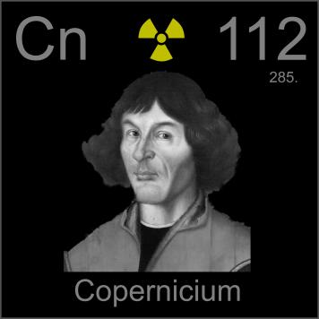

HOME
PREVIOUS
NEXT

Copernicium
Atomic Weight: 285[note]
Density: N/A
Melting Point: N/A
Boiling Point: N/A
Copernicium is named for the astronomer Nicolaus Copernicus, who had very little to do with elements or chemistry in general. It was discovered in 1996 but not named until fourteen years later, in early 2010.